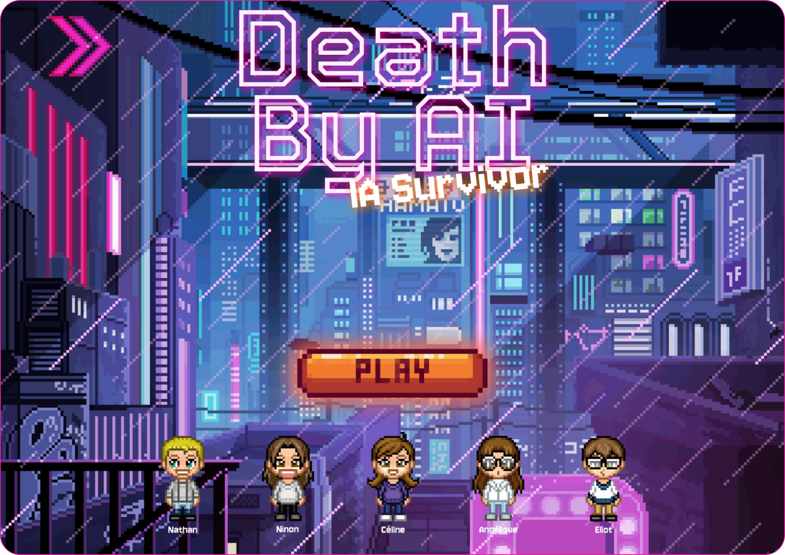

Plongez dans l'univers de Death by IA
Death by IA est un jeu immersif créé en une semaine intense par un groupe de 3 développeurs et 2 designers passionnés. Le concept : vous êtes plongé dans des scénarios où chaque choix compte. Pour survivre, vous devez répondre correctement aux situations proposées, mais attention ! L’intelligence artificielle est là pour réagir à vos décisions, et elle n’a pas l’intention de vous faciliter la tâche. Jusqu’où irez-vous pour échapper à la mort par IA ? 🤖👾

Compétences acquises
J'ai acquis des compétences en création d'interfaces utilisateur, développement en équipe, gestion de projet rapide et conception d'algorithmes, me permettant de concevoir et réaliser des projets efficacement dans un environnement collaboratif.
Technologies utilisées
Pour ce projet, nous avons utilisés HTML, CSS et JavaScript afin de concevoir une interface utilisateur fluide, responsive et interactive.